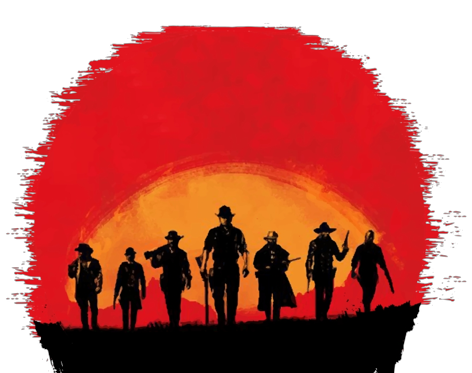
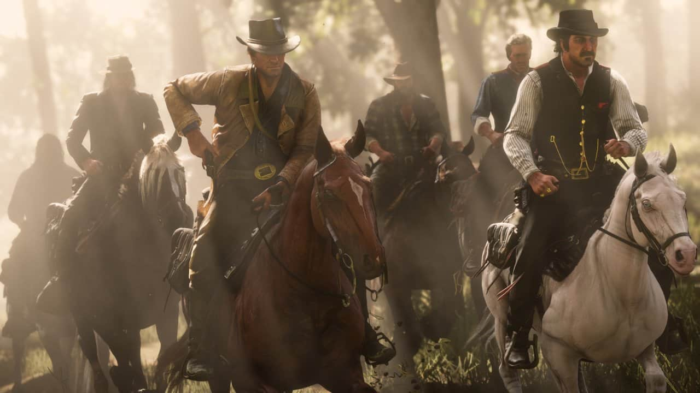
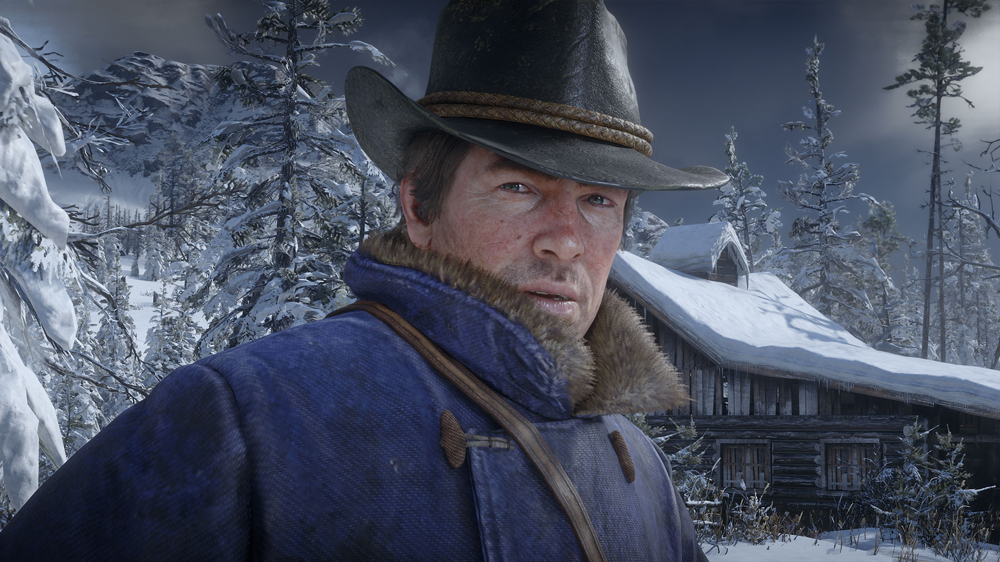
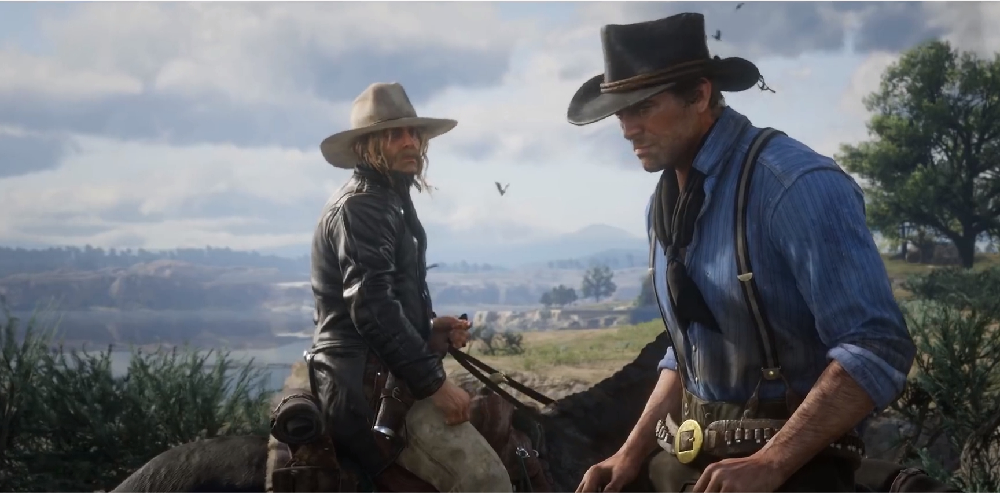
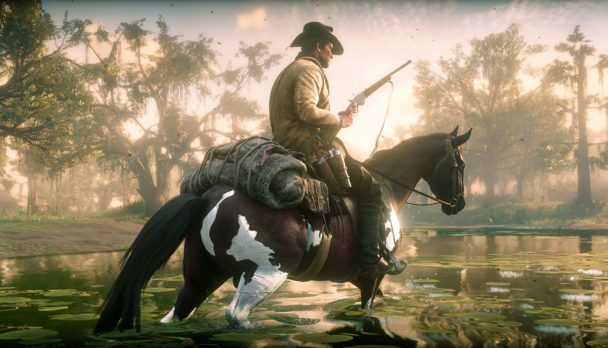

OUT NOW
FOR ALL ANNOUNCEMENTS, FOLLOW/SUBSCRIBE:
Rockstar Mailing List

Red Dead Redemption 2 is a 2018 action-adventure game developed and published by Rockstar Games. The game is the third entry in the Red Dead series and is a prequel to the 2010 game Red Dead Redemption. The story is set in 1899 and follows the exploits of outlaw Arthur Morgan, a member of the Van der Linde gang, in a fictionalized representation of the Western, Midwestern, and Southern United States. Arthur must deal with the decline of the Wild West whilst attempting to survive against government forces, rival gangs, and other adversaries. The game's epilogue follows fellow gang member John Marston, the protagonist of Red Dead Redemption.
gameplay
Red Dead Redemption 2 is a Western-themed action-adventure game. Played from a first or third-person perspective, the game is set in an open-world environment featuring a fictionalized version of the Western, Midwestern, and Southern United States in 1899, during the latter half of the Wild West era and the turn of the twentieth century. The game features both single-player and online multiplayer components, the latter released under Red Dead Online. For most of the game, the player controls outlaw Arthur Morgan, a member of the Van der Linde gang, as he completes numerous missions—linear scenarios with set objectives—to progress through the story; from the game's epilogue, the player controls John Marston, the playable protagonist of the game's predecessor, Red Dead Redemption. Outside of missions, the player may freely roam the game's interactive world. The player may engage in combat with enemies using melee attacks, firearms, throwables, or explosives. Combat has been refined from the game's predecessor, and notable new mechanics consist of dual-wielding and the ability to use a bow. The player is granted the ability to swim as Arthur, but not as John—a reference to the previous game, where swimming led to instant death.
Red Dead Redemption 2's unexploited land makes up the largest portion of the game world and features diverse landscapes with occasional travelers, bandits, and wildlife.
There are urban settlements in the game, ranging from farmhouses to towns and cities. Horses are the main forms of transportation, of which there are various breeds,
each with different attributes. The player can steal horses, and must either train or tame a wild horse to use it; to own a horse, the player must saddle or stable it.
Increased use of a horse will begin a bonding process, which can be increased by leading, petting, cleaning and feeding it, and the player will acquire advantages as
they ride their horse. Stagecoaches and trains can also be used to travel. The player can hijack an incoming train or stagecoach by threatening the driver or passengers
and then rob its contents or the passengers.
The player may also witness or take part in random events encountered from exploring the game world. These include ambushes, crimes committed by other people,
pleas for assistance, ride-by shootings, public executions, and animal attacks. For example, as the player explores the Wild West, they can find specific people
in distress. If the player decides to help them, they will be thankful and may reward the player if they cross them again. The player may also take part in
side-activities, which include small tasks with companions and strangers, dueling, bounty hunting, searching for treasure or other collectibles around the
map such as rock carvings, and playing poker, blackjack, dominoes, and Five Finger Filet. Hunting animals also plays a major role in the game, providing
food, income, and materials for crafting items. When hunting, the player needs to take into account several factors, including the choice of weapon and
shot placement, which affect the quality of the meat and pelt and subsequently the price traders are willing to pay. The player can either skin the animal
immediately or carry the carcass, which will rot over time and decrease its value and attract predators.
The game focuses heavily on player choice for the story and missions. Certain moments in the story will give the player the option to accept or decline additional missions and lightly shape the plot around their choices. The player can communicate with any non-player character (NPC) in dynamic ways new to the series. The player can choose different dialogue trees with NPCs, such as having a friendly chat or insulting them. If the player chooses to kill an NPC, they can loot their corpse. Red Dead Redemption 2 brings back the Honor system from its predecessor by measuring how the player's actions are perceived in terms of morality. Morally positive choices and deeds like helping strangers, abiding the law, and sparing opponents in a duel will add up to the player's Honor. However, negative deeds such as theft and harming innocents will subtract from the player's Honor. The story is influenced by Honor, as the dialogue and outcomes for the player often differ based on their Honor level. Hitting milestones for the player's Honor level will grant unique benefits, such as rewarding the player with special outfits and large discounts in stores. A low Honor level is also beneficial, as the player will receive a greater number of items from looted corpses
synopsis
Setting
The world of Red Dead Redemption 2 spans five fictitious U.S. states. The states of New Hanover, Ambarino and Lemoyne are new to the series, and are located to the immediate
north and east of Red Dead Redemption's world, whilst the states of New Austin and West Elizabeth return from Red Dead Redemption. The states are centered on the San Luis and
Lannahechee Rivers and the shores of Flat Iron Lake. Ambarino is a mountain wilderness, with the largest settlement being the Wapiti Native American reservation; New Hanover
encompasses a sweeping valley and woody foothills that feature the cattle town of Valentine, the riverside Van Horn Trading Post, and the coal town of Annesburg; and Lemoyne
is composed of bayous and plantations resembling the southeastern United States, and is home to the Southern town of Rhodes, the village of Lagras, and the former French colony
of Saint Denis, analogous to New Orleans.
West Elizabeth consists of wide plains, dense forests, and the prosperous port town of Blackwater. This region has been expanded from the original Red Dead Redemption with a
vast northern portion containing the mountain resort town of Strawberry. New Austin is an arid desert region on the border with Mexico and centered on the frontier towns of
Armadillo and Tumbleweed, also featured in the original game. Parts of New Austin and West Elizabeth have been redesigned to reflect the earlier time; for example, Blackwater
is still under development, while Armadillo is a ghost town as a result of a cholera outbreak.
Characters
The player takes on the role of Arthur Morgan, a lieutenant and veteran member of the Van der Linde gang. The gang is led by Dutch van der Linde, a charismatic man who
extols personal freedom and decries the encroaching march of modern civilization. The gang also includes Dutch's best friend and co-leader Hosea Matthews, Red Dead Redemption
protagonist John Marston , his partner Abigail Roberts and son Jack Marston, the lazy Uncle, gunslingers Bill Williamson, Javier Escuella, and Micah Bell, Black Indian hunter
Charles Smith, and housewife-turned-gunslinger Sadie Adler.
The gang members' criminal acts bring them into conflict with various opposing forces including the wealthy oil magnate Leviticus Cornwall, whose assets become a gang target.
In response, he recruits a team of agents from the Pinkerton Detective Agency, led by Andrew Milton and his subordinate Edgar Ross, to hunt down the gang. The gang also encounters
the Saint Denis-based Italian crime lord Angelo Bronte, the controversial Guarman ruler Alberto Fussar, and Dutch's nemesis Colm O'Driscoll, leader of the rival O'Driscoll gang.
Along its travels, the gang becomes entangled with the Gray and Braithwaite families, two warring families who are rumored to be hoarding Civil War gold; the gang's affiliation
with the families primarily take place through Leigh Gray, the sheriff of Rhodes, and Catherine Braithwaite, the matriarch of the Braithwaite family. Later in the game, Arthur
helps Rains Fall and his son Eagle Flies, both members of the Native American Wapiti tribe whose land is being targeted by the Army.
Development
Preliminary work on Red Dead Redemption 2 began shortly following the release of the original game, Red Dead Redemption (2010). Rockstar San Diego, the studio behind the original game, had a rough outline of the game by mid-2011, and by late 2012, rough scripts of the game had been completed.When Rockstar Games realized that a group of distinct studios would not necessarily work, it co-opted all of its studios into one large team, dubbed Rockstar Studios, to facilitate development between 1,600 people; a total of around 2,000 people worked on the game. Analyst estimations place the game's combined development and marketing budget between US$370 million and US$540 million, which would make it one of the most expensive video games to develop.

While the main theme of the original game was to protect family at all costs, Red Dead Redemption 2 tells the story of the breakdown of a family in the form of the Van der
Linde gang. The team was interested in exploring the story of why the gang fell apart, as frequently mentioned in the first game. Rockstar's Vice President of Creativity
Dan Houser was inspired by film and literature when writing the game, though he avoided contemporary works to avoid being accused of stealing ideas. The team was not
specifically inspired by film or art but rather real locations. The team was focused on creating an accurate reflection of the time, with people and locations. The
citizens in the game feature a contrast between rich and poor, while the locales contrast between the civilization and the wilderness.
Red Dead Redemption 2's recording sessions began in 2013.t Rockstar wanted a diverse cast of characters within the Van der Linde gang. The writers put particular focus on the
individual stories behind each character, exploring their life before the gang and their reasons for remaining with the group. Several characters were cut from the game during
development as their personalities failed to add to the narrative. The actors sometimes improvized some additional lines, but mostly remained faithful to the script. The team
decided that the player would control one character in Red Dead Redemption 2, as opposed to the three protagonists in Rockstar's previous title Grand Theft Auto V (2013), to
follow the character more personally and understand how the events impact him. They felt that a single character is more appropriate for the narrative structure of a Western.
Rockstar Games first teased Red Dead Redemption 2 on October 16–17, 2016, before the official announcement on October 18, 2016. Originally due for release in the second half of 2017, the game was delayed twice: first to Q1/Q2 2018, and later to October 26, 2018. According to Rockstar, the game required extra development time for "polish". To spur pre-order sales, Rockstar collaborated with several retail outlets to provide special edition versions of the game. A companion app, released alongside the game for Android and iOS devices, acts as a second screen wherein the player can view in-game items such as catalogs, journals, and a real-time mini-map. The game was released for Microsoft Windows on November 5, 2019, and was a launch title for Stadia when the service launched on November 19, 2019. The Windows version has visual and technical improvements.
Reviews
"This is a story – a collection of stories, really – about the decline of a way of life, as a small gang of outlaws tries ever harder to outrun the inexorable advance of American
modernity, as well as the enemies and lawmen they have antagonised along the way...There can be no doubt that this is a landmark game. It is a new high water-mark for lifelike
video game worlds..." - 5/5 The Guardian
"It’s a gorgeous depiction of an ugly period that’s patient, polished, and a huge amount of fun to play, and it’s combined with Rockstar’s best storytelling to date. Even after
finishing the lengthy story I can’t wait to go back and play more. This is a game of rare quality; a meticulously polished open world ode to the outlaw era. Looking for one of this
generation’s very best single-player action experiences? Here’s your huckleberry." - 10/10 IGN
"Rockstar is the master of open-world building, of course, with nothing coming close to Grand Theft Auto V’s urban sprawl until now. Red Dead Redemption 2 feels more of an artistic
challenge. You will not find a better facsimile of Los Angeles than GTAV’s Los Santos, but in a sense that world is already defined by artifice. Creating something as natural
as Red Dead Redemption 2 is a seismic achievement..." - 5/5 The Telegraph
"Going back to other open-world games after playing Red Dead Redemption II won’t be easy; this is unequivocally the most well-crafted and fully realized open world in video games.
The attention to detail Rockstar poured into creating this bloody interpretation of a historical period is remarkable. The wide expanses of wilderness feel alive thanks to an
unrivaled dynamic weather system, ambient sound effects, and the most ambitious ecology of flora and fauna ever seen in games." - 10/10 Game Informer
“We’ll get straight to the point : Red Dead Redemption 2 is indeed the most beautiful open-world ever created so far. It buries its competitors...With the amazing experience
we had with Red Dead Redemption 2, we can say that the face of the open world genre has changed once and for all.” - 21/20 JeuxActu
“Not only is Red Dead Redemption 2 a complete and profound achievement, it completes a two-part drama that will remain relevant far longer than any of the other candidates
this year has put forward.” - 10/10 Press Start Australia